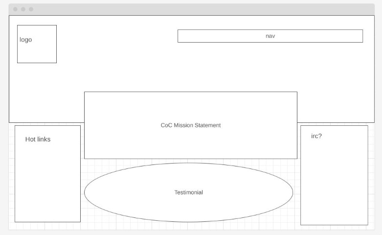
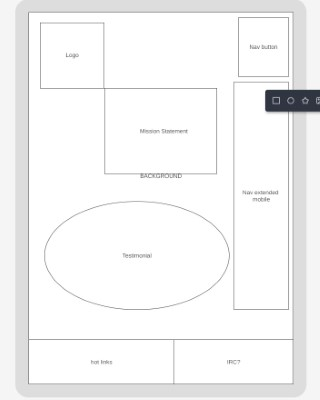

Site Name
The site name will be "Idaho Falls Chamber".
Site Purpose
This site is in development to express Idaho Falls' unique blend in commerce. We will want to express some key aspects of the cities variety as well as it's primary employers and trades We also want to express our ability to grow and expand our city.
Scenarios
Scenario 1: What would be the general life experience of those doing business in this city?
Scenario 2: Does Idaho Falls possess the resources we need to expand and build out our business?
Scenario 3: How broad is the economic diversity of this city?
Color
Cyan | #00eeff
Grey | #fcde9d
Typography
Font 1: Sunflower - We will use Sunflower as our leading header font. This is what the main chamber page uses already.
Font 2: Gupter - We will use Gupter. The US government uses Gupter for their Cyber Chamber and Idaho Falls is an important cyber security hub.
Example: The power of sound compells you.
Example: The power of sound compells you
Wireframe
Desktop
Mobile
